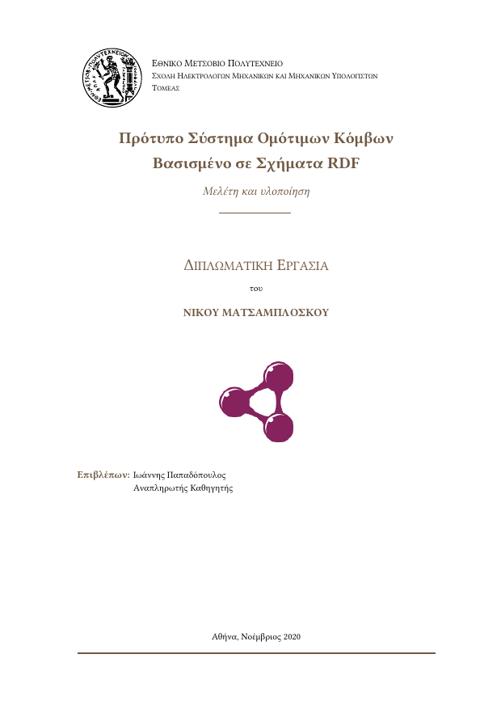

Πρότυπο Διπλωματικής
ΣΗΜΜΥ ΕΜΠ
LaTeX πρότυπο για τη διπλωματική σου, έτοιμο για Overleaf.
Γράφεις ελληνικά και αγγλικά στην ίδια πρόταση, χωρίς \en{…},
και κάνει compile με XeLaTeX, LuaLaTeX ή pdfLaTeX.
Δημιουργεί νέο project στο Overleaf με το πρότυπο και XeLaTeX ήδη επιλεγμένο.

Η ίδια πρόταση, όπως την πληκτρολογείς, χωρίς καμία εντολή:
Ξεκίνημα
Τρία βήματα: παίρνεις το πρότυπο, γράφεις το κείμενό σου στα αρχεία του και βγάζεις το PDF. Διάλεξε πού θα δουλεύεις:
Στο Overleaf το πιο απλό
- Παίρνεις το πρότυποΠάτα «Άνοιγμα στο Overleaf» στην αρχή της σελίδας. Ανοίγει νέο project με XeLaTeX ήδη επιλεγμένο.
- ΓράφειςΣτον editor του Overleaf, στα αρχεία του project (δες πού γράφεις τι).
- Βγάζεις το PDFΠάτα Recompile. Το PDF εμφανίζεται δεξιά και κατεβαίνει με το κουμπί λήψης από πάνω του.
Το δωρεάν Overleaf σταματά κάθε compile στα 10 δευτερόλεπτα· δες τι κάνεις.
Στο GitHub χωρίς όριο χρόνου
- Παίρνεις το πρότυποΣτο GitHub του προτύπου πάτα Use this template → Create a new repository. Διάλεξε Private για να μη φαίνεται η εργασία σου.
- ΓράφειςΣτο δικό σου repository άνοιξε ένα αρχείο, πάτα το μολύβι (ή το πλήκτρο . για πλήρη editor), γράψε και πάτα Commit changes.
- Βγάζεις το PDFΣε κάθε commit το GitHub κάνει compile μόνο του, σε περίπου 2 λεπτά (φαίνεται στο Actions). Το PDF: Releases → pdf → thesis.pdf.
Χωρίς εγκατάσταση. Στα ιδιωτικά repositories κάθε compile μετράει στα δωρεάν λεπτά του μήνα του λογαριασμού σου.
Στον υπολογιστή σου και offline
- ΓράφειςΣε όποιον editor θες, π.χ. VS Code ή Notepad++.
- Βγάζεις το PDFΆνοιξε τον offline compiler:
python compile.pyστον φάκελο του προτύπου (στα Windows και με διπλό κλικ). Ανοίγει στον browser, με κουμπί Compile, τα σφάλματα με τη γραμμή τους και το PDF δίπλα.
Το compile.py υπάρχει ήδη μέσα στο ZIP. Θέλει Python
3.7 ή νεότερη, χωρίς τίποτε άλλο. Αν προτιμάς τερματικό: latexmk -xelatex main.tex.
Πού γράφεις το κείμενό σου
Το πρότυπο έχει ήδη μια εργασία-παράδειγμα. Σβήνεις το κείμενό της και γράφεις το δικό σου στα ίδια αρχεία:
| Τι | Αρχείο |
|---|---|
| Τίτλος, όνομα, επιβλέπων | main.tex, στην αρχή: \title{…}, \authorNameGR{…}, \supervisor{…} κ.λπ. |
| Περίληψη, ευχαριστίες, πρόλογος | front_matter/abstract.tex, acknowledgements.tex, preface.tex |
| Κεφάλαια | body_matter/intro.tex, chap2.tex … chap9.tex |
| Παραρτήματα | back_matter/appA.tex … appE.tex |
| Εικόνες | φάκελος figures/ |
| Βιβλιογραφία | references.bib |
- Λιγότερα ή περισσότερα κεφάλαια: σβήνεις ή προσθέτεις γραμμές
\include{body_matter/…}στο τέλος τουmain.tex. - Έχεις ήδη γραμμένο κείμενο σε LaTeX; Αντιγράφεις μόνο το περιεχόμενο κάθε κεφαλαίου
στο αντίστοιχο αρχείο, χωρίς
\documentclassκαι\begin{document}. Όσα\usepackage{…}χρειάζεται μπαίνουν στοmain.tex, μετά το\documentclass.
Το όριο των 10 δευτερολέπτων στο Overleaf
Όσο γράφεις, κράτα τις επιλογές plain,noindex που έχει ήδη το
main.tex: το compile γίνεται πολύ πιο γρήγορο. Αν το πρώτο compile λήξει,
πάτα ξανά Recompile. Για την τελική έκδοση, με τα γραφικά και το ευρετήριο, βγάλε
το PDF από το GitHub ή τον υπολογιστή σου.
Overleaf χωρίς το κουμπί
- Κατέβασε το ZIP.
- Overleaf: New Project → Upload Project και διάλεξε το ZIP.
- Menu → Compiler: XeLaTeX και TeX Live version: η πιο πρόσφατη.
Άλλες μηχανές
latexmk -xelatex main.tex # προτείνεται
latexmk -pdf main.tex # pdfLaTeX
latexmk -lualatex main.tex # LuaLaTeXΆλλη γραμματοσειρά
Μετά το \documentclass, π.χ. CMU Serif:
\setmainfont{cmun}[Extension=.otf,
UprightFont=*rm, BoldFont=*bx,
ItalicFont=*ti, BoldItalicFont=*bi]Τι διορθώθηκε
| Στο αρχικό πρότυπο | Τώρα |
|---|---|
Χωρίς την επιλογή plain: δεκάδες σφάλματα TikZ («Did you forget a semicolon?») | Compile χωρίς σφάλματα με όλες τις επιλογές |
| Με XeLaTeX/LuaLaTeX δεν έκανε compile | Δουλεύει, με γραμματοσειρές OpenType της επιλογής σου |
Τα αγγλικά χωρίς \en{…} έβγαιναν με ελληνικά γράμματα | Με XeLaTeX γράφονται κανονικά· το \en{…} μένει προαιρετικό |
Κώδικας: def τυπωνόταν «δεφ», τα ελληνικά σχόλια χάνονταν | Σωστός κώδικας και ελληνικά σχόλια σε όλες τις μηχανές |
\url{https://…} τυπωνόταν «ηττπς://…» | Τα URL γράφονται πάντα με λατινικά |
Το ; γινόταν άνω τελεία «·» | Ελληνικό ερωτηματικό· η άνω τελεία γράφεται · |
| Βιβλιογραφία με «Diplwmatik'h ergas'ia», «kai», «Sto» | Σωστά ελληνικά σε όλες τις μηχανές |
Έλεγχοι
Αυτόματα σενάρια με pdfLaTeX, XeLaTeX και LuaLaTeX: όλες οι επιλογές, μικτό κείμενο, κώδικας, TikZ, βιβλιογραφία, δύο φοιτητές, αλλαγή compiler. Η αναφορά έχει τα αποτελέσματα και στιγμιότυπα πριν και μετά.